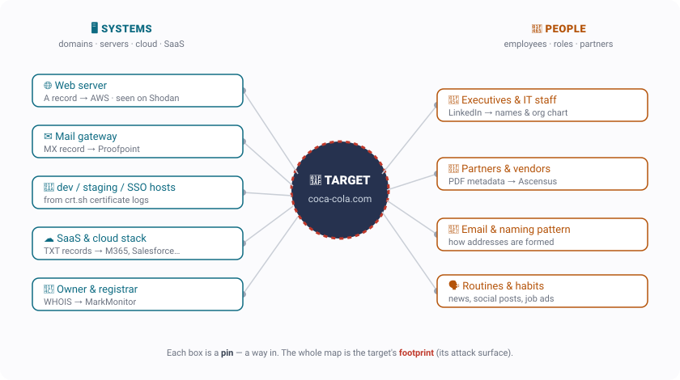
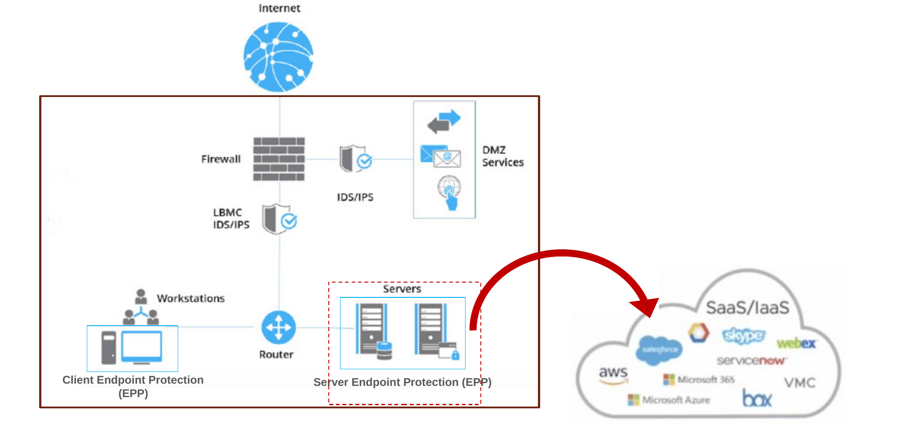

← Course home · Ethical Hacking
Week 2 · Reconnaissance & Footprinting¶
🧭 Kill chain · Phase 1 — Reconnaissance
The red line down the left marks the attacker's view (most of this page). The blue line near the end marks the defender's view.
🔴 RED TEAM · attacker's view
What you'll learn
- Reconnaissance (recon) = quietly building a map of a target before touching it
- The two things you put on the map: systems and people
- The six moves: WHOIS → DNS → crt.sh → zone transfer → Shodan → OSINT
- Passive vs. active recon — and why you always start passive
- How the map (the footprint) feeds every later phase — and how defenders shrink it
🥤 Running example — coca-cola.com
Every move below is shown on one real target, coca-cola.com, using public sources only. Follow the flow and watch a global company's footprint come together from its name alone.
1. Recon is building a map¶
Like the crew in Ocean's Eleven studying the casino before the heist, an attacker studies a target before touching it. The goal is to build a map of everything that could be a way in. Every item you find is a pin on that map. There are two kinds of pins — systems (servers, websites, cloud services) and people (employees, partners) — and the finished map is called the footprint: the target's whole attack surface.

2. The goal: find a way in¶
A company keeps its internal network hidden — from the outside it's a black box. But a few systems face the world on purpose: the public web server and mail server. These live in the DMZ (demilitarized zone — the small, exposed slice of a network that's meant to be reachable from the internet). Those are the front doors. Recon is casing the building: which doors face the street, which are guarded, and who comes and goes — almost entirely from public information.

3. The recon flow — click through it¶
Six moves take you from a bare domain name to a full footprint. Click each step to see the tool, the command, and what it reveals about Coca-Cola. They escalate: the first steps are passive (the target never knows), and step 4 is the one that crosses into active (the target could notice).
STEP 1WHOISwho owns it
STEP 2DNSthe addresses
STEP 3crt.shside doors
STEP 4 · ACTIVEZone transferask for everything
STEP 5Shodanthe front door
STEP 6OSINT & Peoplethe wider net
↑ Click a step — each shows the tool, the command, and what it reveals about Coca-Cola
🪪 WHOIS — the "deed"¶
WHOIS is a public registration record for a domain — like a property deed. You look it up; you never touch the target to read it.
Coca-Cola: the domain is owned by The Coca-Cola Company through the registrar MarkMonitor — a corporate registrar big brands use, with the personal contact details locked down. (A small cake shop's domain would often leak a real name and email right here.)
whois coca-cola.com
🚪 Doors so far: none — but you now know who you're up against.
🧭 DNS — the address book¶
DNS (Domain Name System — the internet's address book) turns a name like coca-cola.com into the actual servers behind it. Reading its records maps the public-facing infrastructure. The record types:
Arecord → the web server's IP address (the front door)MXrecord → the mail gateway — Coca-Cola's is Proofpoint (…pphosted.com)NSrecord → the name servers (the machines that answer DNS questions) — Coca-Cola's run on Microsoft AzureTXTrecord → text notes that quietly reveal the SaaS stack: Microsoft 365, Salesforce, Atlassian, DocuSign, KnowBe4
nslookup -type=MX coca-cola.com · dig +short TXT coca-cola.com
🚪 Doors: the web + mail servers in the DMZ. (See exactly how a name gets resolved, and who hosts each piece, in §4 below.)
🔎 crt.sh — the side doors¶
Every website with a padlock uses a TLS certificate (Transport Layer Security — the technology behind the 🔒 in your browser). You can't get one of these certificates without the hostname being written into a public log. So certificate names are hostnames.
The site crt.sh lists every certificate ever issued for a domain — which surfaces the forgotten dev, staging, and sso hosts that are often the softest way in. Each one is a new pin.
crt.sh/?q=%.coca-cola.com
⚠️ One net, not the only net: a wildcard certificate (*.coca-cola.com) hides the specific names behind it.
⚠️ Zone transfer — asking for everything (the one ACTIVE step)¶
A zone transfer is a request that asks a name server to hand over its entire list of DNS records at once (the technical name is AXFR). Name servers are supposed to share that full list only with their own backup servers — so a properly configured one refuses a stranger. A misconfigured one dumps the whole zone, including internal hostnames it never meant to expose.
dig AXFR coca-cola.com @ns1-09.azure-dns.com → Transfer failed ✔ (correct, secure)
dig AXFR zonetransfer.me @nsztm1.digi.ninja → dumps the whole zone (a safe practice domain built to allow this)
🚦 This is where recon crosses from passive to active — you asked their server to do something, and it can log your request. (It's still not scanning — that's probing the machines directly, which is next week.)
📡 Shodan — the front door up close¶
Shodan is a search engine for internet-connected devices (instead of web pages). Look up the web server's IP address and you learn a lot about that front door.
Coca-Cola: ports 80 (nginx) and 443 (Apache) running on Amazon Web Services (AWS), plus a list of CVEs for those software versions — including a critical one rated 9.8. A CVE (Common Vulnerabilities and Exposures) is a public ID number for a known software flaw.
⚠️ Shodan only guesses at flaws from the version number in the server's banner — it hasn't actually tested anything, and the server may already be patched. These are leads to confirm by scanning, not proven holes. (See the Equifax case below.)
👥 OSINT & people — the wider net¶
OSINT (Open-Source Intelligence — information gathered from publicly available sources) is how you map the people. Google dorking (using advanced search-engine operators to surface files a site never meant to expose) turns up leaked documents; the metadata hidden inside those documents names vendors and staff; LinkedIn maps the org chart.
Coca-Cola: site:coca-cola.com filetype:pdf → a PDF whose hidden metadata names Ascensus (their retirement-plan provider — a partner pin). LinkedIn → the CIO and the IT team.
🚪 People are pins too. (See the Target and bank-job cases below.)
4. How DNS resolves — and who hosts each piece¶
When your browser needs coca-cola.com, a resolver walks a chain (root → .com → the target's authoritative name server) to get back the IP address; then your browser connects to the web server. The twist worth noticing: the name lookup and the web hosting are usually run by different providers.

5. Passive vs. active — the framework¶
Every pin you collect answers two questions — how you got it and what it's about. Almost everything above is passive (you read public sources and the target never knows). The single active move was the zone transfer, where you contacted their server directly.
 Systems Systems |
 People People |
|
|---|---|---|
 Passive — never touch the target Passive — never touch the target |
WHOIS · DNS · crt.sh · Shodan · dorking | LinkedIn · job posts · a leaked PDF |
 Active — the target can log you Active — the target can log you |
zone transfer · ping · banner grab | eavesdropping · a pretext phone call |
The rule: start in the top-left, squeeze passive recon dry, and go active only when you have to — passive recon is essentially untraceable.
6. It's real — three cases¶
🔓 Equifax (2017) — one unpatched version
Coca-Cola's server is probably patched — but don't assume, because one unpatched flaw is exactly how Equifax was breached. Equifax — a credit bureau (a credit-reporting agency like Experian and TransUnion) — failed to patch a known flaw in Apache Struts, a web-application framework (a different Apache project from the web server you saw on Shodan). The result: the personal data of about 147 million people — names, Social Security numbers, dates of birth — was stolen. Lesson: patch your internet-facing systems.
🏭 Target (2013) — the weak partner
Coca-Cola may be locked down, but a partner may not be — exactly how Target was breached. Attackers phished Fazio Mechanical, an air-conditioning (HVAC) vendor with weak security, stole its login, and — because Target let the vendor in and hadn't segmented (walled off) its network — pivoted from Fazio into Target, planted malware on the checkout terminals, and scraped about 40 million payment-card numbers. Lesson: your weakest link can be a company you don't control.
🥷 The bank job — people are the softest target
Red-teamer Jayson Street is hired by banks to break in. He pulls staff off LinkedIn, copies their badges from profile photos, and overhears a complaint at the staff pub about a VP furious over a botched update. The next morning he walks in with a box of donuts so someone holds the door, hands a teller a fake memo from that VP and a "patch" on a USB stick — and out of fear of the VP, they plug it in. Full remote access. Recon told him who to be and gave him a believable story. That's social engineering (Week 11). Lesson: the map includes people, and people are the softest way in.
🔵 BLUE TEAM · defender's view
Blue Team — how defenders counter recon¶
Everything above was the attacker mapping you. Here's the flip side — what a defender does about it. The defender sits in the SOC (Security Operations Center — the team that monitors for attacks).
The hard truth, and what to do about it
Passive recon is essentially undetectable. It happens on infrastructure you don't control — search engines, WHOIS records, certificate logs, LinkedIn — so you'll never get an alert that someone looked you up.
Since you can't catch passive recon, you shrink the footprint so there's less to find:
- Disable zone transfers to strangers (only your backup name servers should be allowed).
- Strip metadata from documents before publishing them.
- Keep
dev/staging/ test systems off the public internet. - Watch your own certificate-transparency logs — know every hostname before an attacker does.
- Run recon against yourself regularly, and train staff so a "donuts and a USB stick" story doesn't work.
The less there is to find, the safer you are.
A note on MITRE ATT&CK¶
What is MITRE ATT&CK?
You'll see MITRE ATT&CK referenced across this course. It's a free, public catalog — maintained by the nonprofit MITRE — of the real techniques attackers use, each with an ID. The recon on this page maps to the Reconnaissance section of that catalog: for example T1590 (gathering victim network info — the DNS and Shodan work) and T1589 (gathering victim identity info — the LinkedIn and OSINT work). Think of it as a shared dictionary so defenders and attackers can name techniques precisely. Browse it at attack.mitre.org.
Try it yourself¶
Practice — only on a target you own or are authorized to test
Every tool on this page is free and public. On your own domain (or a practice target you're allowed to test), walk the same six moves: whois yourdomain.com, crt.sh/?q=%.yourdomain.com, dig/nslookup for the A / MX / NS / TXT records, and a Shodan lookup of the resulting IP. Keep asking one question: how would I have made this harder to find?
Remember
Reconnaissance = build a map from public sources. Add pins (systems and people), fill each one in, and start passive. The footprint you build here drives your scanning, your exploits, and your social engineering — everything later is built on it.
References¶
- NIST SP 800-115 §4. Free PDF
- OSINT Framework. osintframework.com
- MITRE ATT&CK — Reconnaissance (TA0043). attack.mitre.org
- Target breach — Krebs on Security. Target Hackers Broke In Via HVAC Company
- Equifax breach — U.S. GAO. GAO-18-559